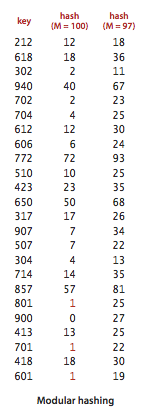

Hash Tables
If keys are small integers, we can use an array to implement a symbol table, by interpreting the key as an array index so that we can store the value associated with key i in array position i. In this section, we consider hashing, an extension of this simple method that handles more complicated types of keys. We reference key-value pairs using arrays by doing arithmetic operations to transform keys into array indices.

Search algorithms that use hashing consist of two separate parts. The first step is to compute a hash function that transforms the search key into an array index. Ideally, different keys would map to different indices. This ideal is generally beyond our reach, so we have to face the possibility that two or more different keys may hash to the same array index. Thus, the second part of a hashing search is a collision-resolution process that deals with this situation.

§ Hash functions.
If we have an array that can hold M key-value pairs, then we need a function that can transform any given key into an index into that array: an integer in the range [0, M-1]. We seek a hash function that is both easy to compute and uniformly distributes the keys.
- Typical example. Suppose that we have an application where the keys are U.S. social security numbers. A social security number such as 123-45-6789 is a 9-digit number divided into three fields. The first field identifies the geographical area where the number was issued (for example number whose first field are 035 are from Rhode Island and numbers whose first field are 214 are from Maryland) and the other two fields identify the individual. There are a billion different social security numbers, but suppose that our application will need to process just a few hundred keys, so that we could use a hash table of size M = 1000. One possible approach to implementing a hash function is to use three digits from the key. Using three digits from the field on the right is likely to be preferable to using the three digits in the field on the left (since customers may not be equally dispersed over geographic areas), but a better approach is to use all nine digits to make an int value, then consider hash functions for integers, described next.
- Positive integers. The most commonly used method for hashing integers is called modular hashing: we choose the array size M to be prime, and, for any positive integer key k, compute the remainder when dividing k by M. This function is very easy to compute (k % M, in Java), and is effective in dispersing the keys evenly between 0 and M-1.
- Floating-point numbers. If the keys are real numbers between 0 and 1, we might just multiply by M and round off to the nearest integer to get an index between 0 and M-1. Although it is intuitive, this approach is defective because it gives more weight to the most significant bits of the keys; the least significant bits play no role. One way to address this situation is to use modular hashing on the binary representation of the key (this is what Java does).
- Strings.
Modular hashing works for long keys such as strings, too:
we simply treat them as huge integers.
For example, the code below computes a modular hash function for
a String s, where R is a small prime integer (Java uses 31).
int hash = 0; for (int i = 0; i < s.length(); i++) hash = (R * hash + s.charAt(i)) % M; - Compound keys.
If the key type has multiple integer fields, we can typically mix them
together in the way just described for
Stringvalues. For example, suppose that search keys are of type USPhoneNumber.java, which has three integer fields area (3-digit area code), exch (3-digit exchange), and ext (4-digit extension). In this case, we can compute the numberint hash = (((area * R + exch) % M) * R + ext) % M;
- Java conventions.
Java helps us address the basic problem that every type of data needs
a hash function by requiring that every data type must implement a method called
hashCode()(which returns a 32-bit integer). The implementation ofhashCode()for an object must be consistent with equals. That is, ifa.equals(b)is true, thena.hashCode()must have the same numerical value asb.hashCode(). If thehashCode()values are the same, the objects may or may not be equal, and we must useequals()to decide which condition holds. - Converting a
hashCode()to an array index. Since our goal is an array index, not a 32-bit integer, we combinehashCode()with modular hashing in our implementations to produce integers between 0 and M-1 as follows:
The code masks off the sign bit (to turn the 32-bit integer into a 31-bit nonnegative integer) and then computing the remainder when dividing by M, as in modular hashing.private int hash(Key key) { return (key.hashCode() & 0x7fffffff) % M; } - User-defined
hashCode(). Client code expects thathashCode()disperses the keys uniformly among the possible 32-bit result values. That is, for any objectx, you can writex.hashCode()and, in principle, expect to get any one of the 2^32 possible 32-bit values with equal likelihood. Java provideshashCode()implementations that aspire to this functionality for many common types (includingString,Integer,Double,Date, andURL), but for your own type, you have to try to do it on your own. Program PhoneNumber.java illustrates one way to proceed: make integers from the instance variables and use modular hashing. Program Transaction.java illustrates an even simpler approach: use thehashCode()method for the instance variables to convert each to a 32-bitintvalue and then do the arithmetic.
We have three primary requirements in implementing a good hash function for a given data type:
- It should be deterministic—equal keys must produce the same hash value.
- It should be efficient to compute.
- It should uniformly distribute the keys.
To analyze our hashing algorithms and develop hypotheses about their performance, we make the following idealized assumption.
§ Assumption J (uniform hashing assumption).
The hash function that we use uniformly distributes keys among the integer values between 0 and M-1.
§ Hashing with separate chaining.
A hash function converts keys into array indices. The second component of a hashing algorithm is collision resolution: a strategy for handling the case when two or more keys to be inserted hash to the same index. A straightforward approach to collision resolution is to build, for each of the M array indices, a linked list of the key-value pairs whose keys hash to that index. The basic idea is to choose M to be sufficiently large that the lists are sufficiently short to enable efficient search through a two-step process: hash to find the list that could contain the key, then sequentially search through that list for the key.

Program SeparateChainingHashST.java
implements a symbol table with a separate-chaining hash table.
It maintains an array of
SequentialSearchST
objects and implements get() and put()
by computing a hash function to choose which SequentialSearchST
can contain the key and then using get() and put()
from SequentialSearchST to complete either job.
Program SeparateChainingLiteHashST.java
is similar but does it using an explict Node nested class.
Proposition K. In a separate-chaining hash table with M lists and N keys, the probability (under Assumption J) that the number of keys in a list is within a small constant factor of N/M is extremely close to 1. of N/M is extremely close to 1. (Assumes an idealistic hash function.)
This classical mathematical result is compelling, but it completely depends on Assumption J. Still, in practice, the same behavior occurs.
Property L. In a separate-chaining hash table with M lists and N keys, the number of compares (equality tests) for search and insert is proportional to N/M.
§ Hashing with linear probing.
Another approach to implementing hashing is to store N key-value pairs in a hash table of size M > N, relying on empty entries in the table to help with with collision resolution. Such methods are called open-addressing hashing methods. The simplest open-addressing method is called linear probing: when there is a collision (when we hash to a table index that is already occupied with a key different from the search key), then we just check the next entry in the table (by incrementing the index). There are three possible outcomes:
- key equal to search key: search hit
- empty position (null key at indexed position): search miss
- key not equal to search key: try next entry

Program LinearProbingHashST.java is an implementation of the symbol-table ADT using this method.
As with separate chaining, the performance of open-addressing methods is dependent on the ratio α = N/M, but we interpret it differently. For separate chaining α is the average number of items per list and is generally larger than 1. For open addressing, α is the percentage of table positions that are occupied; it must be less than 1. We refer to α as the load factor of the hash table.
Proposition M. In a linear-probing has table of size M with N = α M keys, the average number of probes (under Assumption J) is ~ 1/2 (1 + 1 / (1 - α)) for search hits and ~ 1/2 (1 + 1 / (1 - α)^2) for search misses or inserts.
 Q + A.
Q + A.
-
Why does Java use 31 in the
hashCode()forString? - It's prime, so that when the user mods out by another number, they have no common factors (unless it's a multiple of 31). 31 is also a Mersenne prime (like 127 or 8191) which is a prime number that is one less than a power of 2. This means that the mod can be done with one shift and one subtract if the machine's multiply instruction is slow.
-
How do you extract the bits from a variable of type
doublefor use in hashing? -
Double.doubleToLongBits(x)returns a 64-bitlonginteger whose bit representation is the same as the floating-point representation of thedoublevaluex. -
What's wrong with using
(s.hashCode() % M)orMath.abs(s.hashCode()) % Mto hash to a value between 0 and M-1? -
The
%operator returns a non-positive integer if its first argument is negative, and this would create an array index out-of-bounds error. Surprisingly, the absolute value function can even return a negative integer. This happens if its argument isInteger.MIN_VALUEbecause the resulting positive integer cannot be represented using a 32-bit two's complement integer. This kind of bug would be excruciatingly difficult to track down because it would only occur one time in 4 billion! [ The String hash code of "polygenelubricants" is -2^31. ]